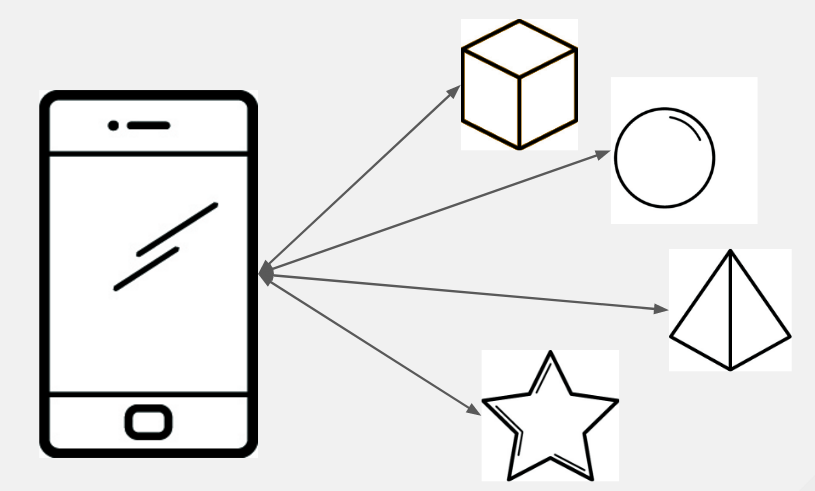
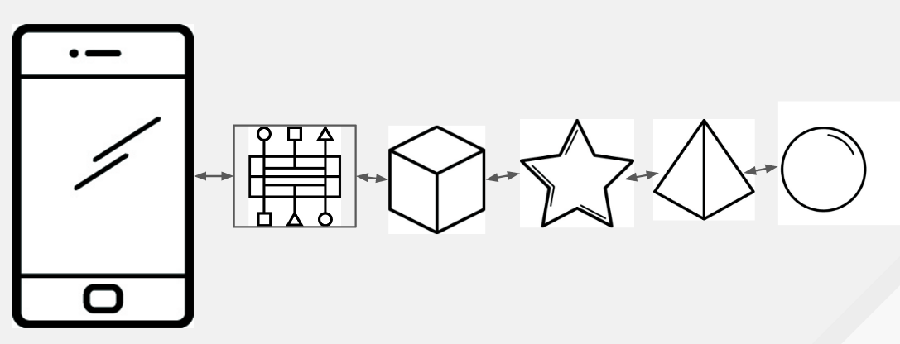
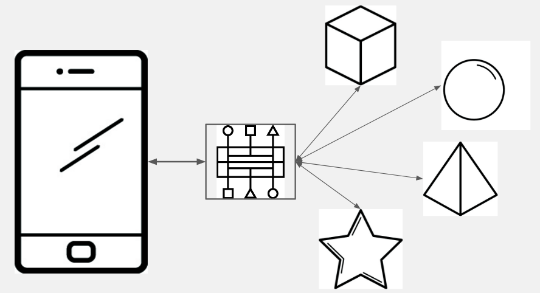
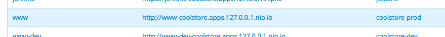
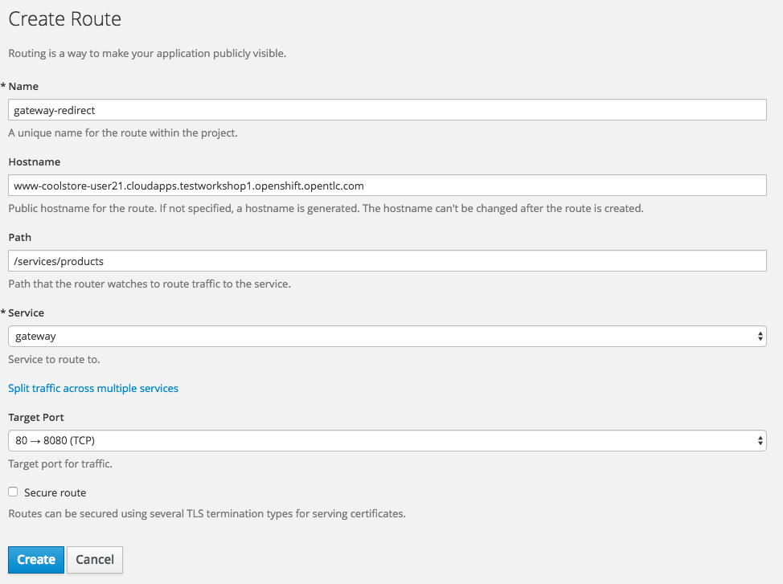
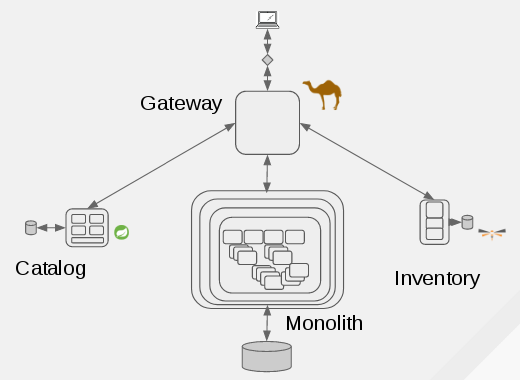

Microservice Integration Patterns
- In previous labs, we created two new microservices with the intention of replacing functionality (“strangling”) the monolithic application. Currently no traffic is routed to them.
- If you were to re-route traffic from the monolith’s /services/products API to the new catalog service’s /services/catalog endpoint, you would be missing the inventory data.
- In this lab we will consider different options and architectures for integrating the microservices’ functionality into our app.
Option 1: Client Aggregation
- Microservices implement functionality previously found in monoliths
- Some microservices depend upon other microservices
- Client applications (e.g. web browsers) depend on all of them in one way or another, and are usually “outside the firewall”
- This option means that the client side code (typically run in a browser) is responsible for talking to each microservice and aggregating/combining the results
- Client aggregation benefits
- No development bottleneck on the server / ESB-style funnel
- Client aggregation drawbacks
- Network bandwidth/latency of multiple calls to multiple microservices
- Unfriendly protocols - web proxies, ports, etc
- Difficulty in later refactoring microservices - the client must change too
- Client application code complexity

Option 2: Chaining
-
Chaining means that one microservice calls another, which calls another, etc.
-
A complete chain is typically not desirable or necessary, but short chains are OK
-
Chaining benefits
- Client code simpler - there is only a single entry into the chain
- Less network bandwidth (also due to single entry point)
-
Chaining drawbacks
- Potential for cascading failures (resilience patterns can help minimize this)
- Complex “stack traces” when things go wrong (tracing libraries a must)
- Exposes internal structure of app logic (the first microservice in the chain would be difficult to change)

Option 3: API Gateway
-
The API Gateway pattern:
- Keeps business logic on server side
- Aggregates results from back-end services
-
API Gateway Pattern benefits
- Encapsulates internal structure of application’s services
- Less chatty network traffic
- Simplified client code (no aggregation)
-
Drawbacks
- Possible bottleneck depending on difficulty of adding new services

Step 1
- In this lab, the previously developed microservices will be placed behind a gateway service
- The client application will then call the gateway service to retrieve its data
- This will “strangle” the monolith by replacing its catalog/inventory services with new microservices.
First, deploy the API gateway:
$ cd ~/coolstore
$ git clone -b app-partner https://github.com/epe105/gateway
$ cd gateway
Please update <USERNAME> below with your assigned username
$ oc project coolstore-<USERNAME>
$ mvn clean fabric8:deploy -Popenshift -DskipTests
Step 2
- The Coolstore Gateway microservice is a Spring Boot application that implements its logic using an Apache Camel route.
Take a look at the code for the Gateway in your browser : https://github.com/epe105/gateway/blob/master/src/main/java/com/redhat/coolstore/api_gateway/ProductGateway.java
59restConfiguration()
60 .contextPath("/services").apiContextPath("/services-docs")
61 .apiProperty("host", "")
62 .apiProperty("api.title", "CoolStore Gateway API")
63 .apiProperty("api.version", "1.0")
64 .component("servlet")
65 .bindingMode(RestBindingMode.json);- The beginning of this route uses the Camel Java DSL (Domain-Specific Language) to configure the REST system and define the base paths of the API itself (/services) and paths to Swagger documentation (/services-docs).
67rest("/products").description("Access the CoolStore products and their availability")
68 .produces(MediaType.APPLICATION_JSON_VALUE)- This begins the REST DSL portion, defining the primary access point for the catalog of products (/products) and the format of the data it produces (JSON)
70.get("/").description("Retrieves the product catalog, including inventory availability").outType(Product.class)
71 .route().id("productRoute")
72 .setBody(simple("null"))
73 .removeHeaders("CamelHttp*")
74 .recipientList(simple("http4://{{env:CATALOG_ENDPOINT:catalog:8080}}/api/catalog")).end()
75 .unmarshal(productFormatter)
76 .split(body()).parallelProcessing()
77 .enrich("direct:inventory", new InventoryEnricher())
78 .end()
79.endRest();- This configures the endpoint for retrieving a list of products by first contacting the Catalog microservice, .split()ing the resulting list, and enriching (via enrich()) each of the products with its inventory by passing each product to the direct:inventory route.
94from("direct:inventory")
95 .id("inventoryRoute")
96 .setHeader("itemId", simple("${body.itemId}"))
97 .setBody(simple("null"))
98 .removeHeaders("CamelHttp*")
99 .recipientList(simple("http4://{{env:INVENTORY_ENDPOINT:inventory:8080}}/api/inventory/${header.itemId}")).end()
100 .setHeader("CamelJacksonUnmarshalType", simple(Inventory.class.getName()))
101 .unmarshal().json(JsonLibrary.Jackson, Inventory.class);- This is the direct:inventory route, which takes in a Product object (in the body()) and calls out to the Inventory microservice to retrieve its inventory. The resulting inventory is placed back into the Camel exchange for enrichment by the enricher:
108@Override
109public Exchange aggregate(Exchange original, Exchange resource) {
110
111 // Add the discovered availability to the product and set it back
112 Product p = original.getIn().getBody(Product.class);
113 Inventory i = resource.getIn().getBody(Inventory.class);
114 p.setQuantity(i.getQuantity());
115 p.setLocation(i.getLocation());
116 p.setLink(i.getLink());
117 original.getOut().setBody(p);
118
119 return original;
120
121}- This is the enricher logic which takes the Product and matching Inventory objects, enriches the Product object with information from the Inventory object, and returns it.
- The resulting list sent back to the client is the list of products, each of which is enriched with inventory information
- The client then renders the aggregate list in the UI.
Step 3
- Now that the gateway microservice is deployed, let’s hook it into the application using OpenShift routing.
- A route is a way to expose a service by giving it an externally-reachable hostname like www.example.com, or in our example www-coolstore.
- Routes can be created using oc expose command line, or through the GUI.
- Path based routes specify a path component that can be compared against a URL such that multiple routes can be served using the same underlying service/pod, each with a different path.
- In this case, we already have a route that sends all traffic destined for our monolith to the monolith deployment.
- We want to setup a route such that when the monolith’s GUI calls /services/products, it is re-routed to our new CoolStore gateway microservice, thus completing the partial strangulation of the Inventory and Product Catalog features of our app.
Navigate to Applications → Routes to list the current routes.
Notice the www route is the primary route for our monolith:

Step 4
- Click Create Route to begin creating a new route with the following values:
- Name: gateway-redirect
- Hostname: The full hostname of the existing route as seen above (without the http://). For example:
- www-coolstore-user1.apps.ocp.naps-redhat.com
- Path: /services/products
- Service: gateway
- Leave other values as-is (see next page for complete example)
- Click Create to create the route

Step 5
- Test the new route by visiting the application UI (click on the coolstore-prod route in the Overview). It will be no different than the original monolith. How do you know your new microservices are being used in place of the original services?
Step 6
- Let’s pretend that there is a lengthy and cumbersome process for getting products and inventories into and out of the backend system.
- We have a high priority task to remove the Red Hat Fedoras from the product list due to a manufacturing defect.
- Let’s filter the product out of the result using our gateway.
Open the gateway source code file and un-comment the lines that implement a filter based on product ID (around line 80). The highlighted code shows you the predicate used for the filter
Use vi to make changes in the code. If you need help in using vi, please click here
$ vi ~/coolstore/gateway/src/main/java/com/redhat/coolstore/api_gateway/ProductGateway.java
77//
78// Uncomment the below lines to filter out products
79//
80// .process(exchange -> {
81// List<Product> originalProductList = (List<Product>)exchange.getIn().getBody(List.class);
82// List<Product> newProductList = originalProductList.stream().filter(product ->
83// !("329299".equals(product.itemId)))
84// .collect(Collectors.toList());
85// exchange.getIn().setBody(newProductList);
86// })Save your changes and quit
$ shift + Z
$ shift + Z
Step 7
- Re-deploy the modified code using the same procedure as before:
$ cd ~/coolstore/gateway
$ mvn clean fabric8:deploy -Popenshift -DskipTests
$ oc logs -f dc/gateway
...
--> Success # --> wait for it!
Step 8
- Once the new version of the code is deployed and up and running, reload the browser and the Red Hat Fedora product should be gone:

Congratulations!!!
- Our monolith’s UI is now talking to our new Camel-based API Gateway to retrieve products and inventories from our WildFly Swarm and Spring Boot microservices!
- Further strangling can eventually eliminate the monolith entirely.
